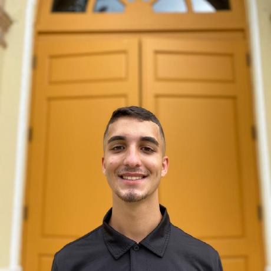
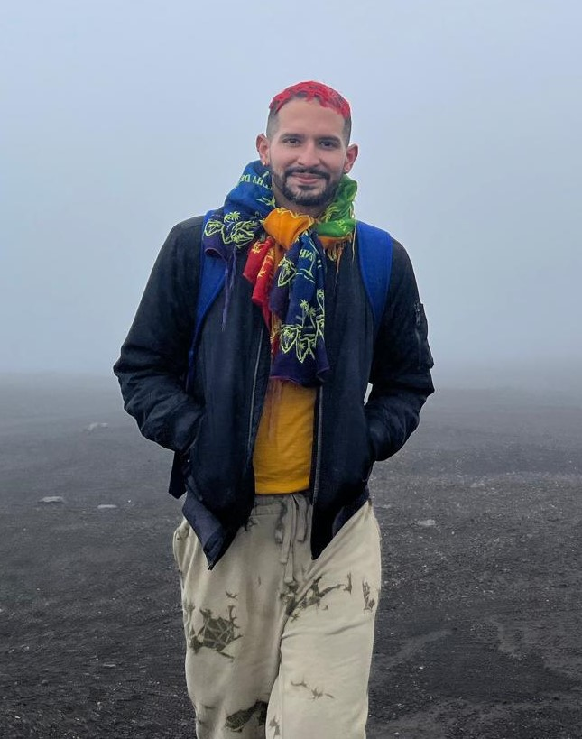
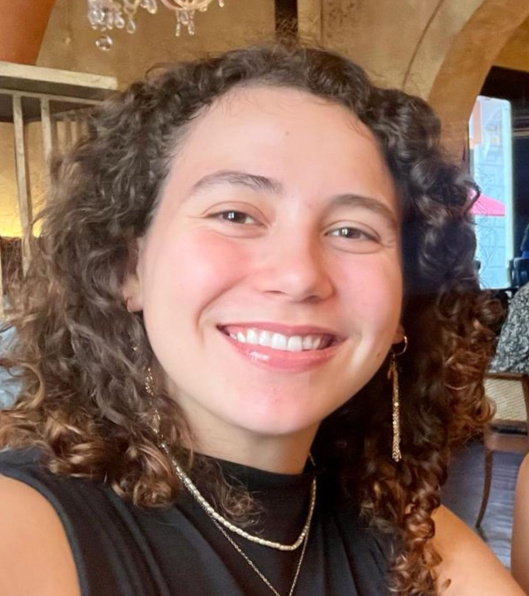

CURRENT MEMBERS
Lab Technicians
Grad Students
Julienn Torres, B.S.
PhD Candidate | HHMI-Gilliam Fellow
I am Julienn Torres Rodríguez, a fourth-year doctoral student specializing in regenerative biology. My research aims to identify and characterize genes that play a crucial role in the regeneration of nerves and the intestines. By focusing on the effects of gene inhibition—particularly genes such as Notch and HNF4—I analyze key cellular processes involved in regeneration, including proliferation, dedifferentiation, and migration. This work has the potential to uncover novel targets for therapeutic strategies and advance our understanding of regenerative mechanisms in both neural and gastrointestinal tissues.

Glen Wickersham, M.S.
PhD Student
In developmental biology, constructing accurate cellular networks is essential for analyzing stages of change in tissue. This is performed through the thorough studies of molecular networks throughout different stages of a developmental process, including multimodel networks to simulate and analyze the molecular landscape. In our laboratory, my research question incorporates the precise identification and validation of molecular growth factors, migration factors, axonal guidance factors, as well as other molecules from genomic, transcriptomic and single-cell assembly data. In collaboration with other wet-lab techniques, I seek to identify the potential impact the localized expression of these molecular factors can play in aiding or allowing the successful enteric nervous system regenerative process of the intestine to occur.

Alexis Ruiz, B.S.
PhD Student | NSF Bridge to the Doctorate Program Fellow
My research focuses on understanding the cellular, molecular, and microbial mechanisms underlying intestinal regeneration in the sea cucumber Holothuria glaberrima. Specifically, I aim to characterize the mechanisms involved in intestinal lumen formation and mucosal epithelium development, investigate the composition and dynamics of the intestinal microbiome under natural and artificial environmental conditions, and determine the functional role of microbial communities, with particular emphasis on the mycobiome, during regeneration. By integrating histological, cellular, molecular, and sequencing-based approaches, I seek to understand how microorganisms and environmental conditions influence regenerative processes. This work has the potential to provide new insights into host–microbiome interactions and advance our understanding of the biological mechanisms governing intestinal regeneration, tissue repair, and organ restoration.
Evelyn Aviles, B.S.
PhD Candidate
Similar to embryonic development, regeneration is a complex dynamic process that involves cell differentiation, proliferation, and various cell interactions. The insulin growth factor system, (which is composed of Insulin Growth Factor (IGF), IGF-Receptor, IGF-Binding Protein, and IGF-Acid Labile Subunit), is important for these cellular processes. In vertebrate animals, IGF has been shown to be involved in the regenerative process. However, we still do not fully understand how the IGF system is involved in intestinal regeneration. We propose to use a unique organism, the sea cucumber, H. glaberrima, to study how the IGF system affects intestinal regeneration. Our findings will improve our understanding of how IGF works at the molecular and cellular level during intestinal regeneration and could pave the way for future studies in other tissues or organs, and even for potential applications in human regeneration or therapies.
Josh Davila, B.S.
PhD Student | Lab tech BIOL
My research focuses on understanding how reactive oxygen species (ROS) regulate tissue regeneration, using the sea cucumber Holothuria glaberrima as a model. I study how redox signaling and mitochondrial activity coordinate cellular processes essential for regeneration, with the goal of identifying mechanisms that could contribute to the development of new strategies in regenerative medicine and biotechnology.
Post Bacc
Undergraduate Students
Alondra Aleman
Andrea Martinez
andrea.martinez25@upr.edu
IGF complex for regeneration of sea cucumbers intestinal system.
Anna Márquez
annacmarquezs@gmail.com
I am currently working on projects that aim in characterizing coelomocyte cell populations in H. glaberrima, and their roles during intestinal regeneration. Furthermore, I am evaluating the effects of other physiological processes, such as aestivation, on regeneration mechanisms on a micro and macroscopic scale.
Antonio López
antonio.lopez@upr.edu
Carlos Ruperto
carlos.ruperto1@upr.edu
Diego Martínez
diego.matrinez28@upr.edu
Elienice Rivera
elienice.rivera@upr.edu
Esteban Elizalde
esteban.elizalde@upr.edu
Ian Arce
ian.arce@upr.edu
Jorge Hernandez
jorge.hernandez76@upr.edu
Jose Agosto
jose.agosto12@upr.edu
Lucia Cruz
lucia.cruz1@upr.edu
María Santiago
maria.santiago77@upr.edu

Raquel Cordero | IDGene Fellow
Undergraduate researcher investigating intestinal and radial nerve cord regeneration in the sea cucumber Holothuria glaberrima. Research utilizes pharmacological approaches to examine the roles of HNF4 and Notch signaling in cellular processes such as proliferation and dedifferentiation. Experience with RNA interference (RNAi) techniques to evaluate gene function and its potential contributions to regenerative mechanisms. Current participant in the IDGeNe program and former trainee in the RISE program.
raquel.cordero6@upr.edu
Sebastián Castro | IDGene Fellow
sebastian.castro3@upr.edu
Echinoderms carry out formidable regeneration of their intestinal and nervous system tissue. As a member of the deuterostome superclade, echinoderms share several developmental and gene regulatory network characteristics, establishing a close phylogenetic relationship with vertebrates. The prominin gene is widely associated with cell stemness, proliferation, migration and differentiation, all essential processes in the regeneration response of the sea cucumber. As such, in this study we use bioinformatic tools, in-situ hybridization chain reaction (HCR-FISH) and RNA-sequencing data to characterize the prominin family in the sea cucumber, focusing on its phylogenetic relationship to other vertebrate and invertebrate species while characterizing its expression in the uninjured and regenerating nervous and intestinal tissues of H. glaberrima.
Solimar Valcárcel Romero | IDGene Fellow
solimar.valcarcel@upr.edu
My research focuses on understanding the molecular mechanisms involved in regeneration using the sea cucumber Holothuria glaberrima, an organism with remarkable regenerative capabilities. Specifically, I study the Notch signaling pathway, a highly conserved pathway involved in cell fate determination, proliferation, and differentiation. My work focuses on identifying and characterizing components of the Notch pathway in H. glaberrima using bioinformatic and transcriptomic approaches, including sequence analysis, phylogenetics, gene expression data, and single-nucleus RNA sequencing. Through this research, we aim to better understand the molecular mechanisms that regulate regeneration and how findings from highly regenerative organisms may contribute to our broader understanding of tissue regeneration.
Tomas Cortiñas
tomas.cortinas1@upr.edu
Victoria Palermo
victoria.palermo@upr.edu
Yainelly Ortiz
yainelly.ortiz@upr.edu
Copyright © 2026 Dev Neuro Lab. All rights reserved.